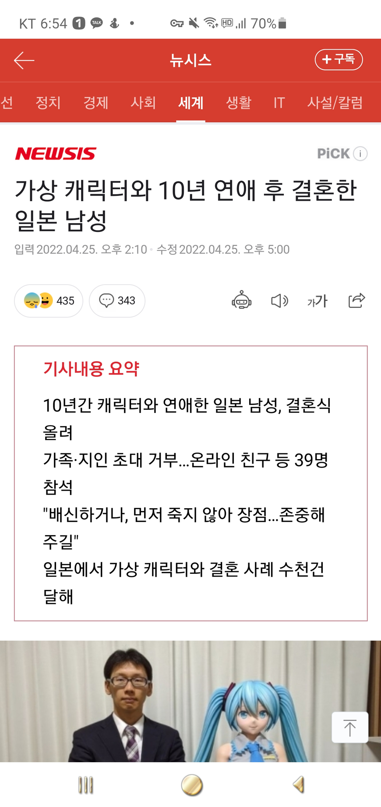
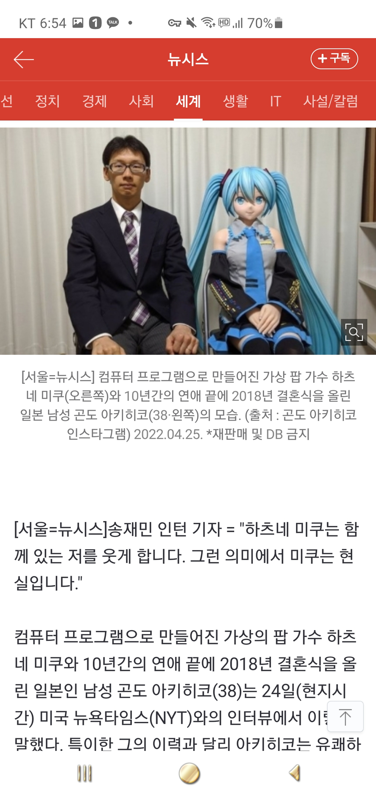
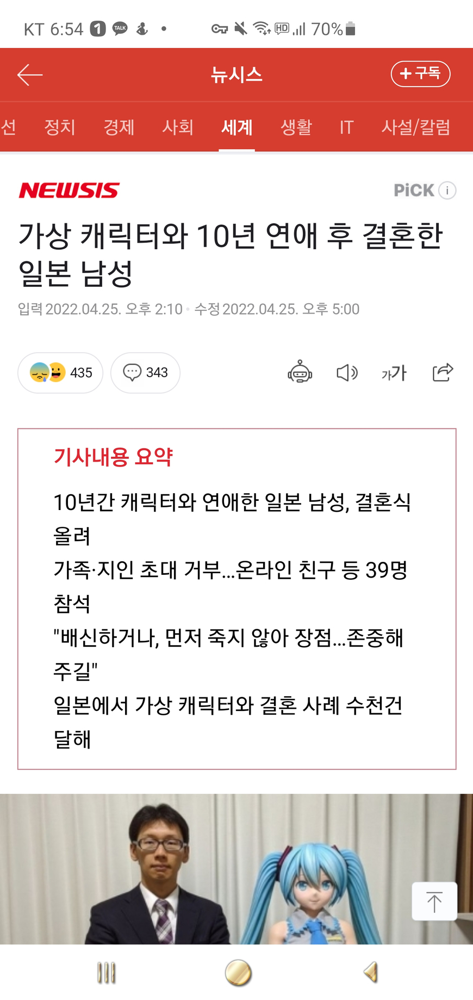
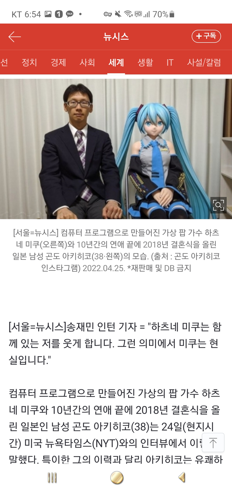

하츠네 미쿠라면 결혼해도 인정이지.
가족과 지인들은 전부 결혼식 참석 거부하고 온라인 친구 39명이 참석했다고 합니다.
출처: https://n.news.naver.com/article/003/0011143994?type=editn&cds=news_edit



하츠네 미쿠라면 결혼해도 인정이지.
가족과 지인들은 전부 결혼식 참석 거부하고 온라인 친구 39명이 참석했다고 합니다.
출처: https://n.news.naver.com/article/003/0011143994?type=editn&cds=news_edit
후원댓글 9개
댓글 9개 ▼